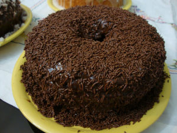
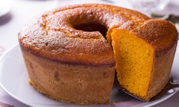

Receitas
Bolo de chocolate
PREPARO DA MASSA
INGREDIENTES:
- 4 Ovos
- 4 Colheres(SOPA) de chocolate em pó
- 2 Colheres(SOPA) de manteiga
- 3 Xícaras(CHÁ) de farinha de trigo
- 2 Xícaras(CHÁ) de açúcar
- 2 Colheres(SOPA) de fermento
- 1 Xícara(CHÁ) de leite
Modo de preparo da massa:
- Em um liquidificador adicione os ovos, o chocolate em pó, a manteiga, a farinha de trigo, o açúcar e o leite, depois bata por 5 minutos.
- Adicione o fermento e misture com uma espátula delicadamente.
- Em uma forma untada, despeje a massa e asse em forno médio (180 ºC) preaquecido por cerca de 40 minutos. Não se esqueça de usar uma forma alta para essa receita: como leva duas colheres de fermento, ela cresce bastante! Outra solução pode ser colocar apenas uma colher de fermento e manter a sua receita em uma forma pequena.
PREPARO DA CALDA
INGREDIENTES:
- 2 Colheres(SOPA) de manteiga
- 7 Colheres(SOPA) de chocolate em pó
- 2 Latas de creme de leite com soro
- 3 Colheres(SOPA) de açúcar
Modo de preparo da calda:
- Em uma panela, aqueça a manteiga e misture o chocolate em pó até que esteja homogêneo.
- Acrescente o creme de leite e misture bem até obter uma consistência cremosa.
- Desligue o fogo e acrescente o açúcar.
Bolo de cenoura
PREPARO DA MASSA
INGREDIENTES:
- 1/2 xícara (chá) de óleo
- 3 cenouras médias raladas
- 4 ovos
- 2 xícaras (chá) de açúcar
- 2 e 1/2 xícaras (chá) de farinha de trigo
- 1 colher (sopa) de fermento em pó
Modo de preparo da massa:
- Em um liquidificador, adicione a cenoura, os ovos e o óleo, depois misture.
- Acrescente o açúcar e bata novamente por 5 minutos.
- Em uma tigela ou na batedeira, adicione a farinha de trigo e depois misture novamente.
- Acrescente o fermento e misture lentamente com uma colher.
- Asse em um forno preaquecido a 180° C por aproximadamente 40 minutos.
PREPARO DA CORBETURA
INGREDIENTES:
- 1 colher (sopa) de manteiga
- 3 colheres (sopa) de chocolate em pó
- 1 xícara (chá) de açúcar
- 1 xícara (chá) de leite
Modo de preparo da massa:
- Despeje em uma tigela a manteiga, o chocolate em pó, o açúcar e o leite, depois misture.
- Leve a mistura ao fogo e continue misturando até obter uma consistência cremosa, depois despeje a calda por cima do bolo.
SORVETE FACIL
INGREDIENTES
- 1 lata de leite condensado
- 1 lata de creme de leite
- 1 gelatina de qualquer sabor
MODO DE PREPARO
- Faça a gelatina normalmente e não leve à geladeira.
- Depois que pronta, ainda quente, coloque no liquidificador junto com o leite condensado e o creme de leite.
- Bata bem.
- Depois leve ao congelador em um refratário tampado para não formar blocos de gelo.
- Depois de congelado, retire do congelador e bata na batedeira para ficar cremoso.
- Volte para o congelador.
- Está pronto, um sorvete fácil, prático e gostoso.